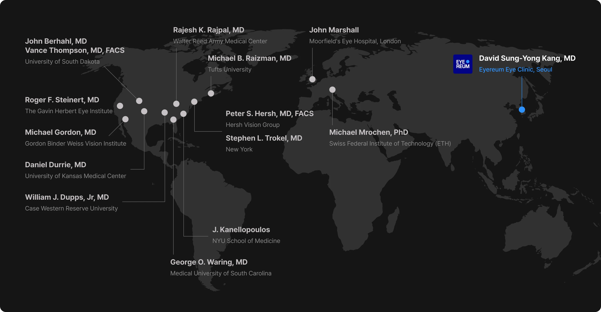

각막 콜라겐교차결합술을 위한
KXL® System
KXL® 은 각막 콜라겐 교차결합술(Corneal Cross-linking)을 위한 전용 시스템입니다. UV-A와 리보플라빈(VibeX®)을 이용해 각막 콜라겐의 결합력을 높여 각막 조직을 강화하며, Lasik Xtra®를 비롯한 다양한 Cross-linking 시술에 사용됩니다.
KXL® 은 각막 콜라겐 교차결합술(Corneal Cross-linking)을 위한 전용 시스템입니다. UV-A와 리보플라빈(VibeX®)을 이용해 각막 콜라겐의 결합력을 높여 각막 조직을 강화하며, Lasik Xtra®를 비롯한 다양한 Cross-linking 시술에 사용됩니다.

KXL® System
기존 보다
각막 생체역학 강화
시력교정술과 함께 시행
(엑스트라 수술)
왼쪽으로 스와이프
아이리움안과 의료진은 각막 생체역학 분야의 세계적인 권위자들과 함께 원추각막 치료와 안전한 시력교정술을 위한 각막 콜라겐교차결합술(Corneal Cross-linking) 연구 및 임상 자문에 참여하고 있습니다.
왼쪽으로 스와이프
